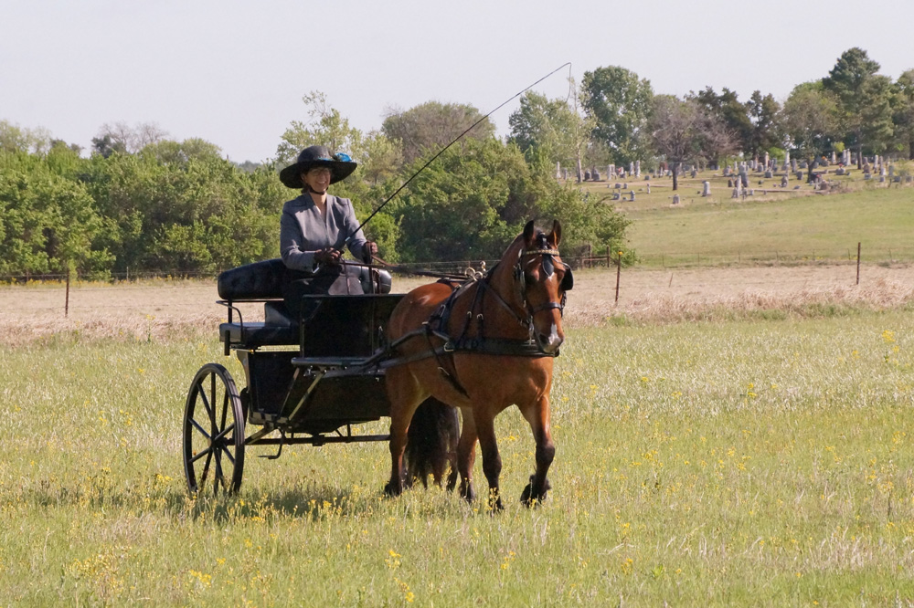
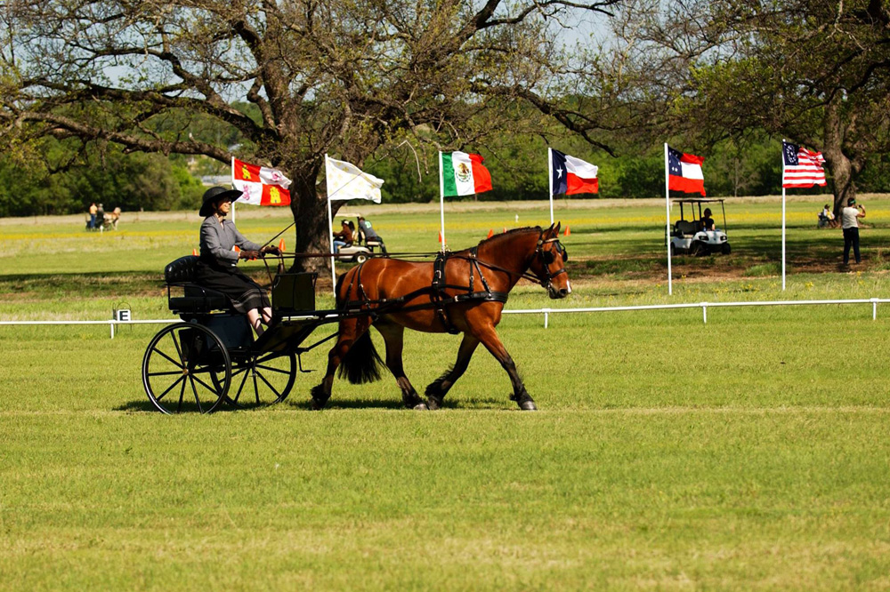
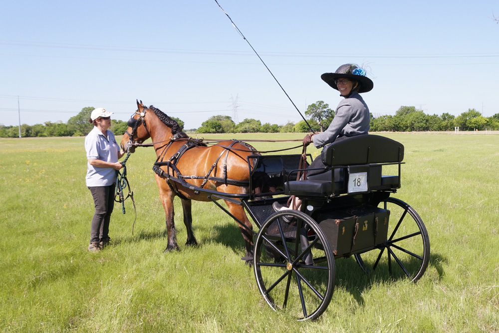
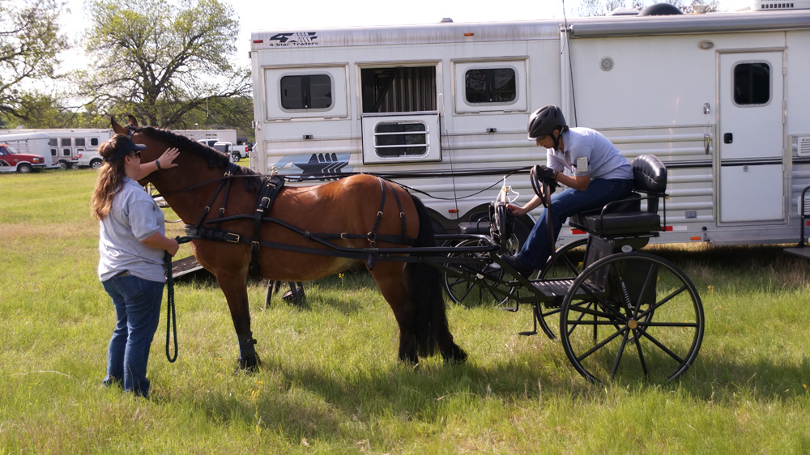
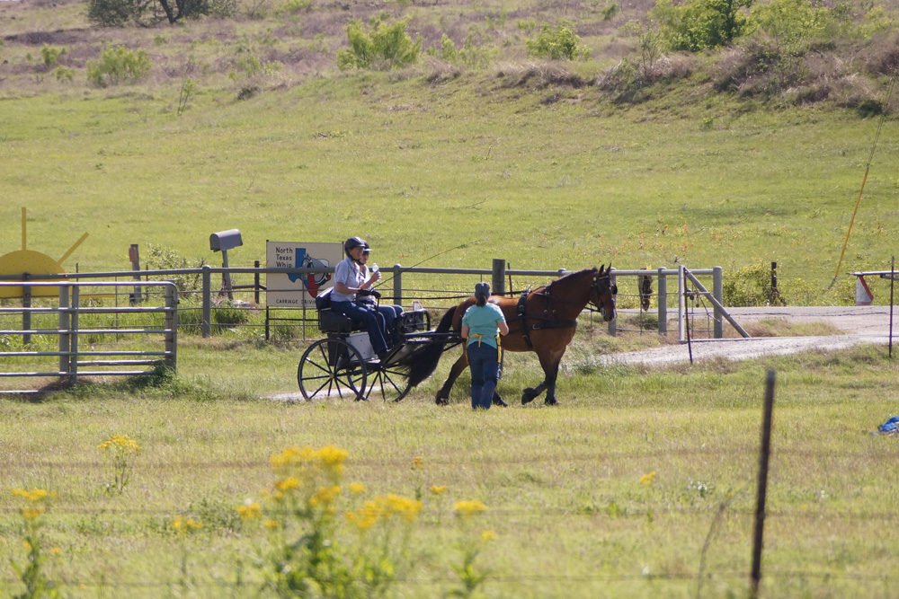
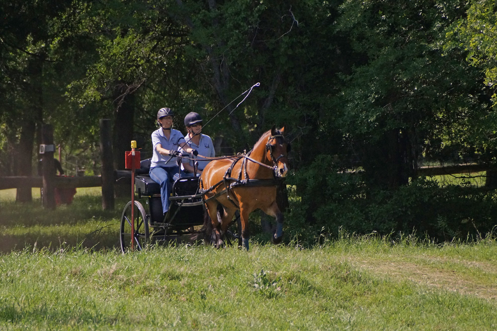

4/6/2017 Sunrise
Ridge Driving Trial
The culmination of our training was our first driving trial.
It was cool and blustery, which was good, but also meant an excited pony.
We were 4th after dressage, but didn't make good time in the cones or marathon.
Still, we completed with only 3 balls down and had a blast on the marathon course.
It makes for a long weekend, but I had so much support from Bart and Meg and Katie and Dave.
The other drivers were also helpful and it was a fun weekend.

Warming up for dressage. A bit of canter was involved, but we put in a nice test.

He's a lovely dressage pony.

After cones with Meg.

Before the marathon with Katie.

Waiting to go on the marathon course.

On the marathon as we passed the photographer.